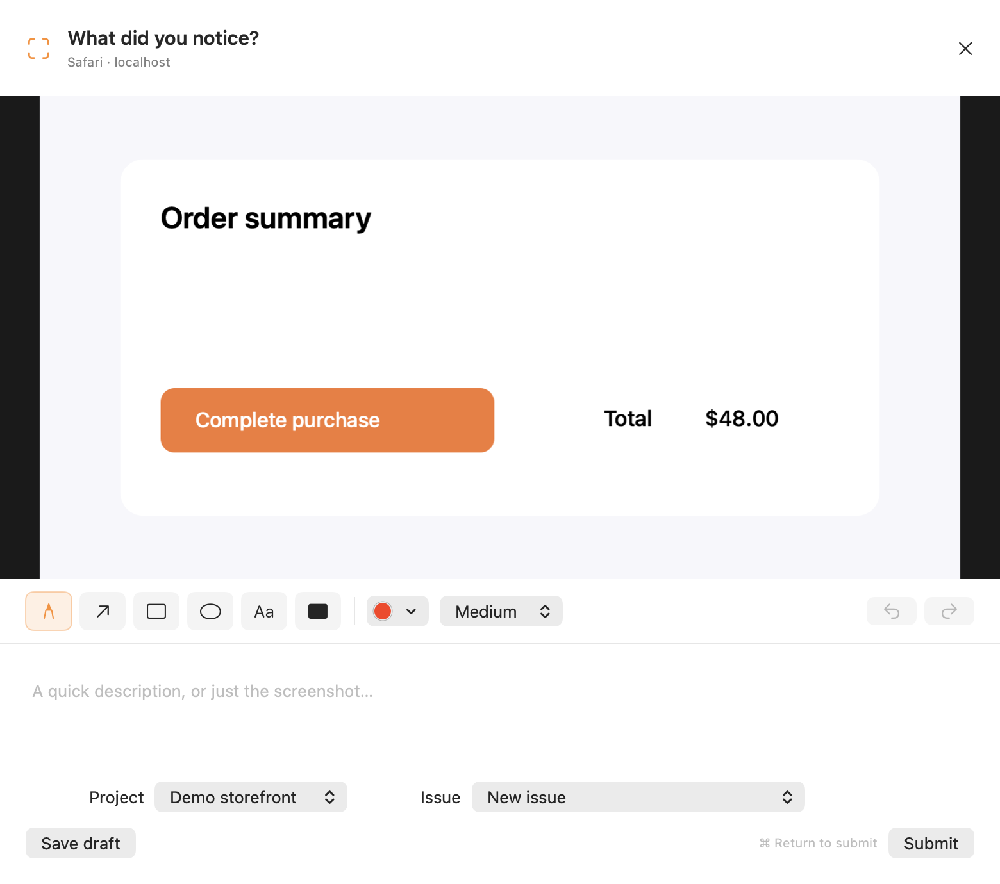
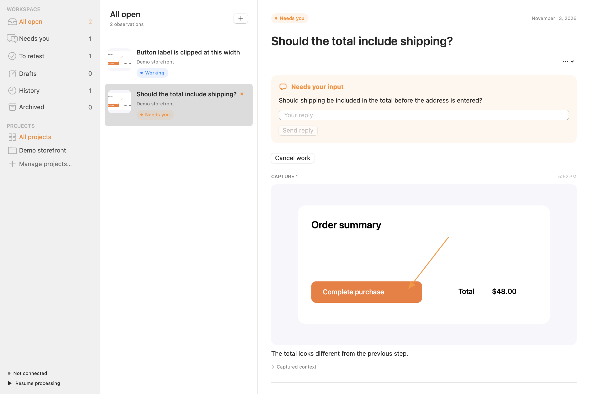

01
Capture what you see.
Press ⌘ ⇧ 2 and select a region. A website or a Mac app — wherever you spot it.
QUICK SCREENSHOT FEEDBACK FOR MAC
Capture the little things as you notice them, with a screenshot and an optional note. Keep going. ScreenClip keeps the context.
Get ScreenClipMade for Mac Works with Codex
THE LAST STEP
Looks good.
Let’s check out.
The button label gets cut off.
Notice it. Clip it. Keep going. An illustration.
FOR ALL THE LITTLE THINGS YOU NOTICE.
A spacing issue. An awkward label. An idea for later.
Save each thought while it’s fresh, without turning it into a whole task.
Press ⌘ ⇧ 2 and select a region. A website or a Mac app — wherever you spot it.
Draw an arrow or add a few words. A screenshot alone works too. No forms to fill out or long reports to write.
Submit and return to what you were doing. Capture the next little thing, and the next. Your feedback stays organized.
LOTS OF SMALL OBSERVATIONS. NOTHING LOST.
Screenshots, notes, and context stay together.
Codex can pick up the work from there.


A quick note. An arrow if you need one. All the context in one capture.
Websites & native Mac apps
Related captures kept together
Codex picks up from there
EVERY LITTLE DETAIL IS WORTH CATCHING.
@@DOWNLOAD_INTRO@@
Make room for all the little things you notice.
ScreenClip helps you capture feedback the moment you notice it, then get back to what you were doing. Grab a screenshot, optionally add a note or annotation, and submit. Your screenshots and context stay organized, and Codex can pick up the follow-up work.
No. Capture anything worth coming back to: a spacing issue, confusing copy, an interaction that feels off, or an idea for improvement. The point is to save the little things before they slip your mind.
You can capture regions of websites and native Mac apps. Add your local Git repositories to ScreenClip and connect them to website addresses or Mac apps so each report reaches the right project.
You’ll need macOS 14 or later, a working Codex CLI, and a local Git project. GitHub CLI is required for pull request automation. Screen Recording permission lets ScreenClip capture the region you select.
@@AVAILABILITY_ANSWER@@